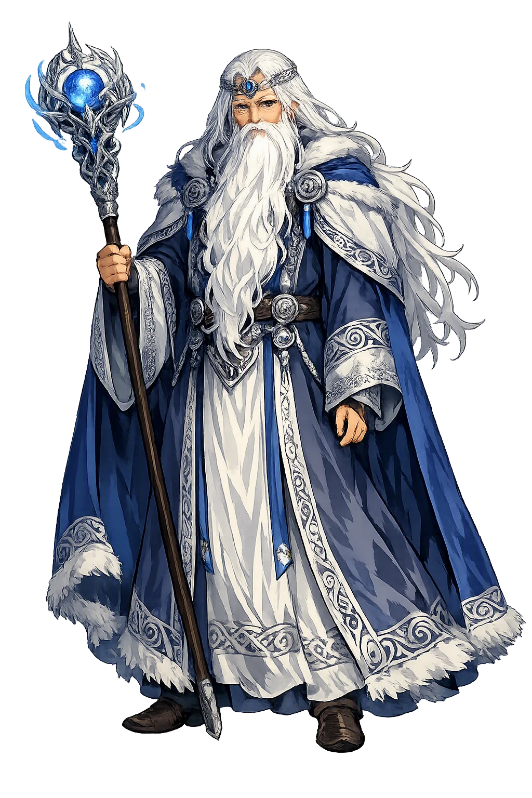
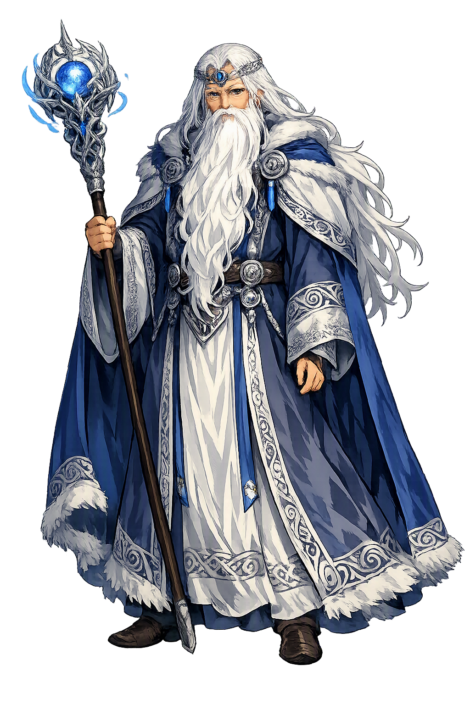

Unicode restoration and ASCII comparison
Math
The name survives in scholarly transliteration. Math is the standard Celtic romanisation, documented in academic sources — “Bear”. Because the spelling uses only Latin letters, the form is the same in both ASCII and Unicode.
No indigenous writing system is securely attested for individual celtic names. The form shown is a modern scholarly transliteration.
math
The plain math form is identical to the Unicode restoration. Because this name is already written in Latin letters, no diacritics, stress, or script information were lost — only capitalization differs.
Math
The Unicode restoration does not need to recover lost marks for Math. Its value is canonical spelling and consistent cataloguing, not the reconstruction of erased orthography. The domain is readable as-is to both DNS and humanity.
Math.com → math.com
The non-ASCII characters in Math are encoded while the ASCII remains visible. To the DNS, it is Punycode. To humanity, it is Math.
How Math is preserved in writing
No indigenous writing system is securely attested for individual celtic names. The form shown is a modern scholarly transliteration.
Contribute scholarly provenance →Owned, ideal, and ASCII forms of Math
Math
The full Unicode restoration. math.com is not in the PuniCodex collection — it is watched for release; if it drops, this temple upgrades to an owned flagship.
How Math was spoken
The domain of Math
In the celtic tradition, Math governed magic, kingship. The name encodes a sphere of power that shaped ritual, narrative, and social order.
Math's hutlath — the magic wand that tested Arianrhod, turned his nephews into beasts for three years, and helped fashion a woman out of flowers.
The strange condition of his kingship: Math could not live except with his feet in the lap of a virgin, unless the turmoil of war released him.
His justice wore animal skins: Gwydion and Gilfaethwy spent a year each as deer, boars, and wolves — and their beast-children were baptized at his court.
With Gwydion he took oak, broom, and meadowsweet and made Blodeuwedd — the wife no earthly race could supply for the nephew fated to have none.
Stories of Math
Math fab Mathonwy is the king at the still centre of the Fourth Branch of the Mabinogi — the branch that bears his name: lord of Gwynedd, master of the magic wand, uncle of Gwydion and Gilfaethwy. His rule hangs on the strangest condition in Welsh literature — he cannot live except with his feet in a virgin's lap, unless war calls him out — and around that geas the whole plot turns: the theft of the swine, the wrong to Goewin, the justice of the three animal years, and the making of a bride from flowers.
Math son of Mathonwy was lord over Gwynedd, and the tale's first fact about him is the condition of his life: except when the turmoil of war prevented it, he could not live unless his feet lay in the lap of a virgin. The office of footholder went to Goewin daughter of Pebin of Dôl Pebin in Arfon, the fairest maiden of her generation; and while Math kept the lap, his sister's sons Gwydion and Gilfaethwy ruled the realm in his stead.
The arrangement is neither joke nor luxury: it is the Fourth Branch's picture of sacral kingship, a rule whose life is bound by taboo. When Gilfaethwy sickened with desire for Goewin, Gwydion read the geas like a statute. The king may leave the lap for one thing only — war. Therefore there would be a war.
Pryderi of Dyfed held the hobeu, the swine sent him from Annwfn by its king Arawn — the first pigs ever brought to Wales. Gwydion went south in the guise of a poet, conjured twelve stallions with golden harness, twelve greyhounds with golden collars, and twelve golden shields, traded the day's glamour for the herd, and was gone before the illusion faded. Pryderi mustered and came north, and Math led Gwynedd out to meet him — out of the lap, exactly as the condition required.
At the parley Pryderi demanded single combat, for it was because of him that the hosts had come; at the maenor of Penardd Gwydion slew him 'by strength and valour and by magic and enchantment', and Dyfed gave hostages and went home under tribute. But while Math marched, Gwydion and Gilfaethwy forced Goewin in the king's own chamber. The war had only ever been the key, and the lap the lock.
Goewin would not hide what had been done to her, and Math's first act was redress: he took her as his wife and made her queen, so that the disgrace should not fall on her. Then came judgment. He struck Gwydion and Gilfaethwy with his magic wand into a stag and a hind, and sent them into the wild for a year; when they returned with a fawn, he made them a boar and a sow for the second year, and a wolf and a she-wolf for the third.
Each year's offspring — Hyddwn, Hychddwn Hir, and Bleiddwn — the king took in beast-shape, restored to human form, baptized, and raised. After the third year he struck the brothers back into men: they had had punishment enough, he said, and been greatly shamed, and he received them back into honour. It is the most exact justice in the Mabinogi — transformation as sentence, a year for each skin of the debt, and restoration without residue.
A new footholder was needed, and Gwydion named his own sister, Arianrhod daughter of Dôn. Math put the question plainly — was she a virgin? — and set the test: step over my wand. As she stepped, she dropped a sturdy yellow-haired boy. Math had him baptized at once and named him Dylan, and the boy made straight for the sea and took its nature, Dylan son of Wave.
And as Arianrhod turned to go, she dropped 'something small', which Gwydion swept up and hid in a chest at the foot of his bed — the boy who would be Lleu Llaw Gyffes. The wand that punishes is also the wand that proves: in one gesture the age of footholders ended and the age of the Children of Dôn began.
Arianrhod, shamed before the court, laid her tynghedau on the boy: he should have no name until she named him, no arms until she armed him, and no wife of any race then on earth. Gwydion's craft undid the first two; for the third there was no earthly answer, and it was Math who joined him in making one. The two enchanters took their wands and, from the flowers of the oak, the broom, and the meadowsweet, fashioned the fairest and most beautiful maiden anyone had seen, baptized her, and named her Blodeuwedd — and gave her to Lleu.
The tale records no death for Math. The branch ends with Lleu restored and avenged, ruling Gwynedd after, and the old king simply withdraws from the record — the stillness at the centre to the last.
Math is the proof that a story's most powerful figure can be its stillest. He does not trick, march, or seduce; he sits, and the sitting is the kingship — feet in a maiden's lap, the realm held by nephews, the whole arrangement waiting for someone to notice that war is the one door out of the geas. What makes him great is what he does after the door is used against him: redress before revenge, a wronged girl made queen, a sentence fitted exactly to the crime and limited exactly to it, and then — the rarest thing in any mythology of punishment — restoration without residue. His wand does everything the tale needs: it tests, it transforms, it creates. But its deepest work is juridical. Math is the king whose magic is law and whose law has a measure — three years, three skins, and the account closed — and whose stillness is not weakness but the condition of rule itself.
Enter Extended Lore